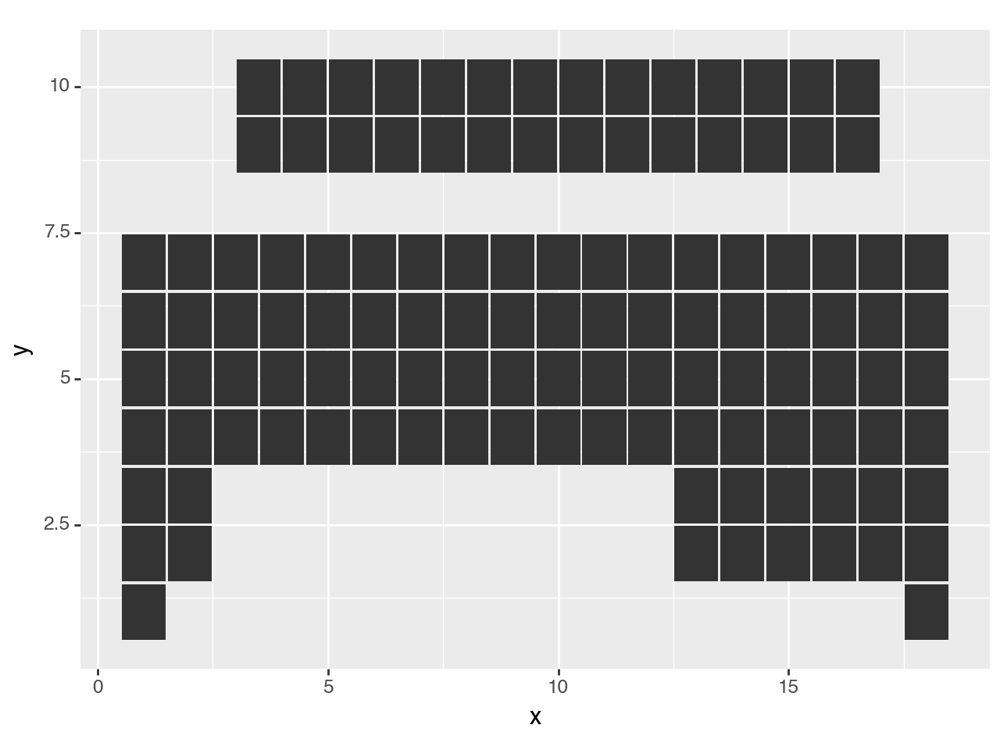
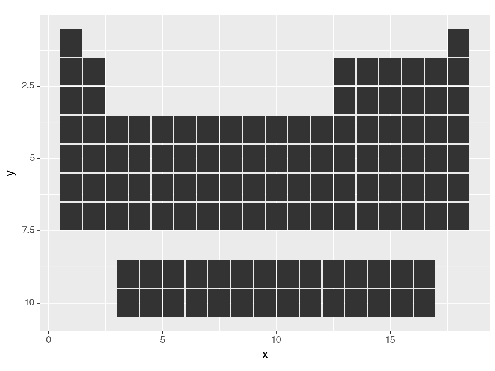
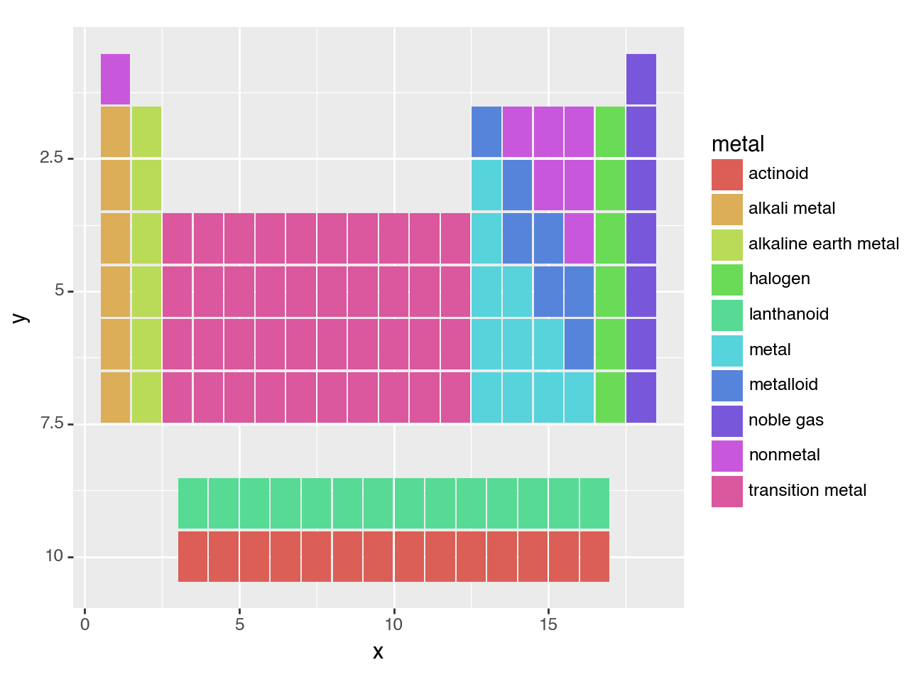
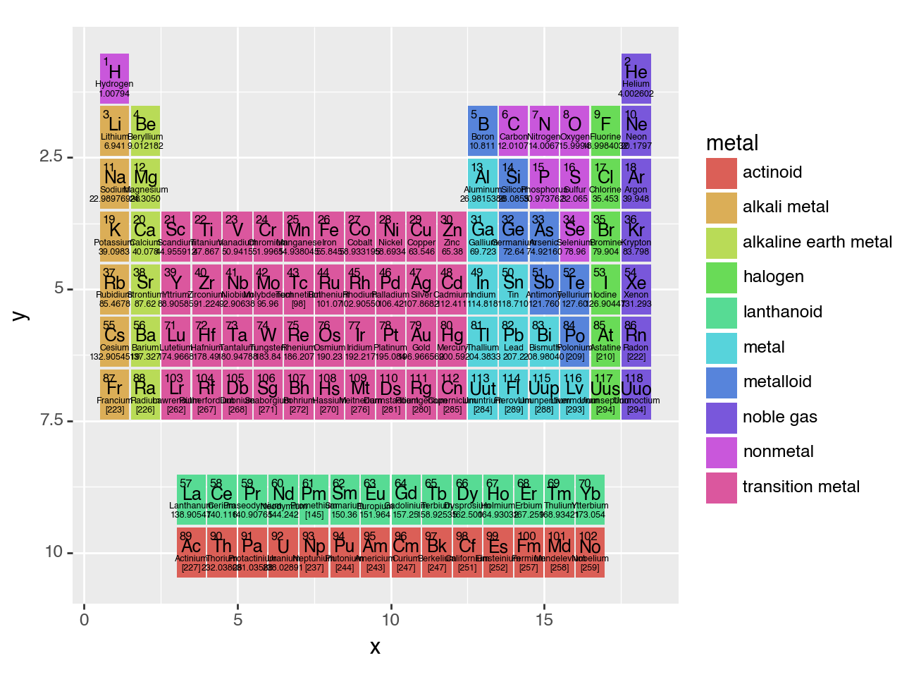
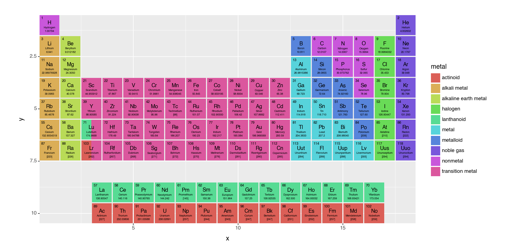
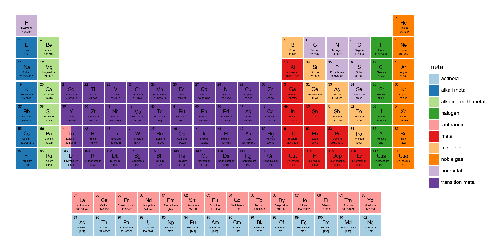
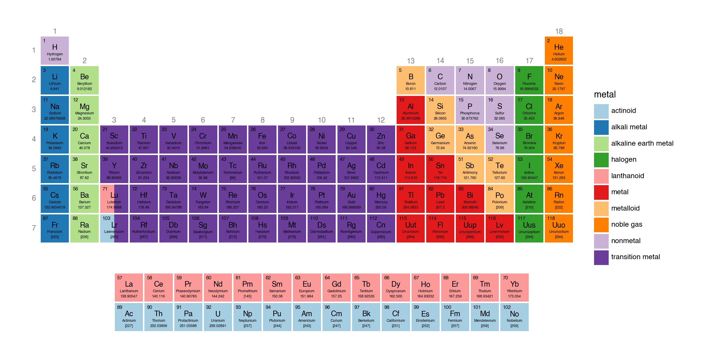
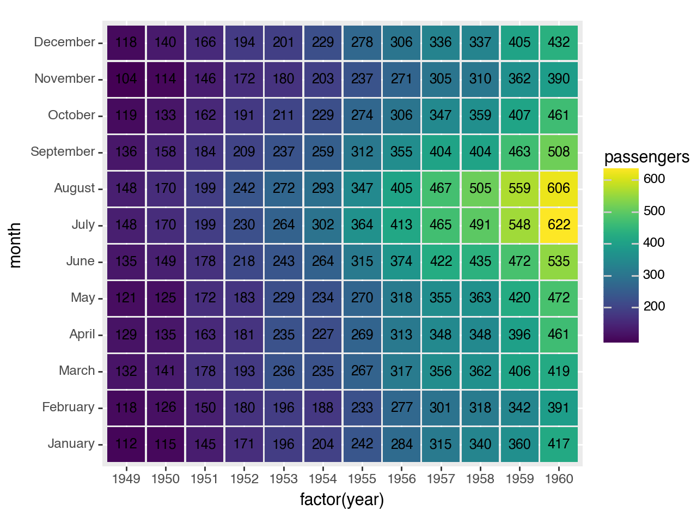
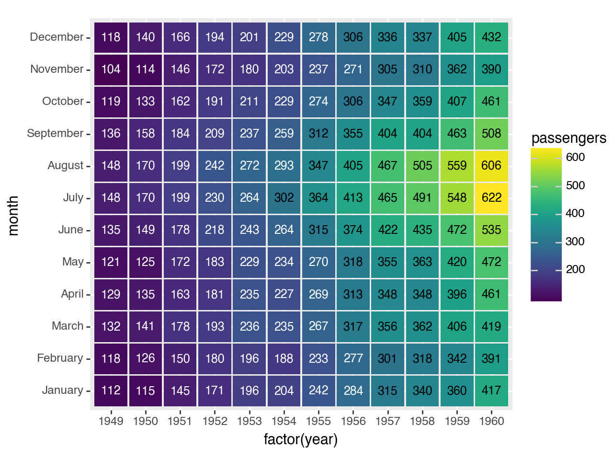
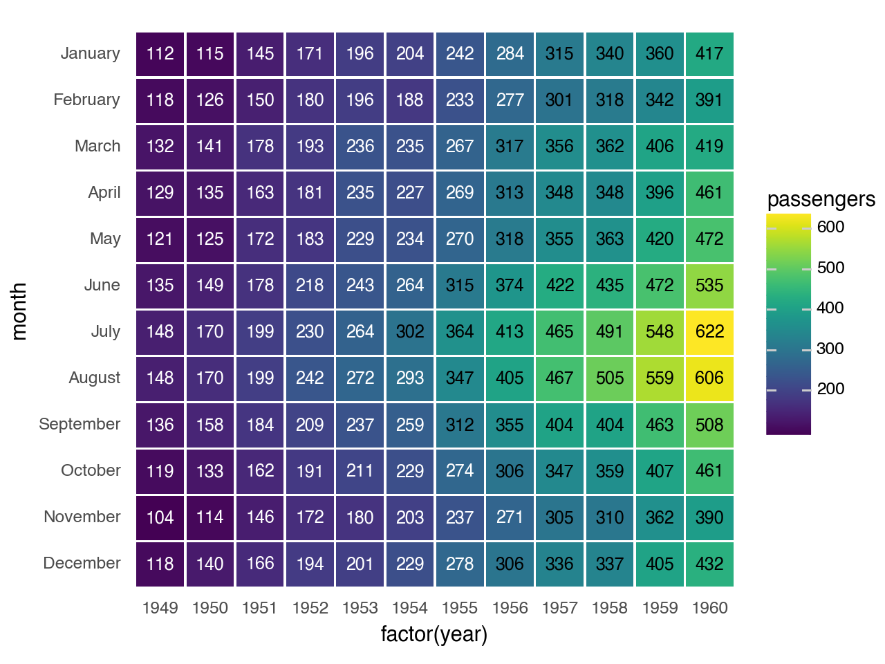

plotnine.geoms.geom_tile¶
- class plotnine.geoms.geom_tile(mapping: Aes | None = None, data: DataLike | None = None, **kwargs: Any)[source]¶
Rectangles specified using a center points
Usage
geom_tile(mapping=None, data=None, stat='identity', position='identity', na_rm=False, inherit_aes=True, show_legend=None, raster=False, **kwargs)
Only the
dataandmappingcan be positional, the rest must be keyword arguments.**kwargscan be aesthetics (or parameters) used by thestat.- Parameters:
- mapping
aes, optional Aesthetic mappings created with
aes(). If specified andinherit.aes=True, it is combined with the default mapping for the plot. You must supply mapping if there is no plot mapping.Aesthetic
Default value
x
y
alpha
1color
Nonefill
'#333333'group
linetype
'solid'size
0.1The bold aesthetics are required.
- data
dataframe, optional The data to be displayed in this layer. If
None, the data from from theggplot()call is used. If specified, it overrides the data from theggplot()call.- stat
stror stat, optional (default:stat_identity) The statistical transformation to use on the data for this layer. If it is a string, it must be the registered and known to Plotnine.
- position
stror position, optional (default:position_identity) Position adjustment. If it is a string, it must be registered and known to Plotnine.
- na_rmbool, optional (default:
False) If
False, removes missing values with a warning. IfTruesilently removes missing values.- inherit_aesbool, optional (default:
True) If
False, overrides the default aesthetics.- show_legendbool or
dict, optional (default:None) Whether this layer should be included in the legends.
Nonethe default, includes any aesthetics that are mapped. If abool,Falsenever includes andTruealways includes. Adictcan be used to exclude specific aesthetis of the layer from showing in the legend. e.gshow_legend={'color': False}, any other aesthetic are included by default.- rasterbool, optional (default:
False) If
True, draw onto this layer a raster (bitmap) object even ifthe final image is in vector format.
- mapping
See also
Examples¶
[1]:
import pandas as pd
import numpy as np
from plotnine import (
ggplot,
aes,
geom_tile,
geom_text,
scale_y_reverse,
scale_y_discrete,
scale_fill_brewer,
scale_color_manual,
coord_equal,
theme,
theme_void,
element_blank,
element_rect,
element_text,
)
Periodic Table of Elements¶
Graphing of highly organised tabular information
Read the data.
[2]:
elements = pd.read_csv('data/elements.csv')
elements.head()
[2]:
| atomic number | symbol | name | atomic mass | CPK | electronic configuration | electronegativity | atomic radius | ion radius | van der Waals radius | ... | EA | standard state | bonding type | melting point | boiling point | density | metal | year discovered | group | period | |
|---|---|---|---|---|---|---|---|---|---|---|---|---|---|---|---|---|---|---|---|---|---|
| 0 | 1 | H | Hydrogen | 1.00794 | #FFFFFF | 1s1 | 2.20 | 37.0 | NaN | 120.0 | ... | -73.0 | gas | diatomic | 14.0 | 20.0 | 0.00009 | nonmetal | 1766 | 1 | 1 |
| 1 | 2 | He | Helium | 4.002602 | #D9FFFF | 1s2 | NaN | 32.0 | NaN | 140.0 | ... | 0.0 | gas | atomic | NaN | 4.0 | 0.00000 | noble gas | 1868 | 18 | 1 |
| 2 | 3 | Li | Lithium | 6.941 | #CC80FF | [He] 2s1 | 0.98 | 134.0 | 76 (+1) | 182.0 | ... | -60.0 | solid | metallic | 454.0 | 1615.0 | 0.54000 | alkali metal | 1817 | 1 | 2 |
| 3 | 4 | Be | Beryllium | 9.012182 | #C2FF00 | [He] 2s2 | 1.57 | 90.0 | 45 (+2) | NaN | ... | 0.0 | solid | metallic | 1560.0 | 2743.0 | 1.85000 | alkaline earth metal | 1798 | 2 | 2 |
| 4 | 5 | B | Boron | 10.811 | #FFB5B5 | [He] 2s2 2p1 | 2.04 | 82.0 | 27 (+3) | NaN | ... | -27.0 | solid | covalent network | 2348.0 | 4273.0 | 2.46000 | metalloid | 1807 | 13 | 2 |
5 rows × 21 columns
Alter the data types of the information that will be plotted. This makes it convenient to work with.
[3]:
elements['group'] = [-1 if g == '-' else int(g) for g in elements.group]
elements['bonding type'] = elements['bonding type'].astype('category')
elements['metal'] = elements['metal'].astype('category')
elements['atomic_number'] = elements['atomic number'].astype(str)
The periodic table has two tables, a top and bottom. The elements in the top have groups, and those in the bottom have no groups. We make separate dataframes for both -- they have different alignments.
[4]:
top = elements.query('group != -1').copy()
bottom = elements.query('group == -1').copy()
The top table is nice and well behaving. The x location of the elements indicate the group and the y locations the period.
[5]:
top['x'] = top.group
top['y'] = top.period
The bottom table has 2 rows, with the atomic number increasing to the right. We create an x based on the atomic number and add a horizontal shift. As the dataframe is ordered by atomic number, the operation is easier. The bottom elements are labelled with a "period". We add a vertical shift to give us a good y location that gives the appearance of two tables.
[6]:
nrows = 2
hshift = 3.5
vshift = 3
bottom['x'] = np.tile(np.arange(len(bottom)//nrows), nrows) + hshift
bottom['y'] = bottom.period + vshift
We will be plotting using tiles and we want to have some space between the tiles. We have set the x and y locations above to take up a unit of space. To get a good effect, the tile dimensions should be less than 1.
[7]:
tile_width = 0.95
tile_height = 0.95
First peak
[8]:
(ggplot(aes('x', 'y'))
+ geom_tile(top, aes(width=tile_width, height=tile_height))
+ geom_tile(bottom, aes(width=tile_width, height=tile_height))
)

[8]:
<Figure Size: (640 x 480)>
The table upside down. We could have been more careful when creating the y locations since the periods are drawn in descending order. But, we can fix that with a reverse scale.
[9]:
(ggplot(aes('x', 'y'))
+ geom_tile(top, aes(width=tile_width, height=tile_height))
+ geom_tile(bottom, aes(width=tile_width, height=tile_height))
+ scale_y_reverse() # new
)

[9]:
<Figure Size: (640 x 480)>
Let us apply some color to it.
[10]:
(ggplot(aes('x', 'y'))
+ aes(fill='metal') # new
+ geom_tile(top, aes(width=tile_width, height=tile_height))
+ geom_tile(bottom, aes(width=tile_width, height=tile_height))
+ scale_y_reverse()
)

[10]:
<Figure Size: (640 x 480)>
Now for some trick¶
Goal: To add text to the tiles
There are four pieces of text that we shall add to the tiles, that is 4 geom_text additions. As we have two tables, that comes to 8 geom_text additions. When any geom is added to a ggplot object, behind the scenes a layer is created and added. We can create a group of layers that can be added to a ggplot object in one go using a list.
We use a function that accepts a dataframe, and returns a list of geoms.
[11]:
def inner_text(data):
layers = [geom_text(data, aes(label='atomic_number'), nudge_x=-0.40, nudge_y=0.40,
ha='left', va='top', fontweight='normal', size=6),
geom_text(data, aes(label='symbol'), nudge_y=.1, size=9),
geom_text(data, aes(label='name'), nudge_y=-0.125, fontweight='normal', size=4.5),
geom_text(data, aes(label='atomic mass'), nudge_y=-.3, fontweight='normal', size=4.5)]
return layers
[12]:
(ggplot(aes('x', 'y'))
+ aes(fill='metal')
+ geom_tile(top, aes(width=tile_width, height=tile_height))
+ geom_tile(bottom, aes(width=tile_width, height=tile_height))
+ inner_text(top) # new
+ inner_text(bottom) # new
+ scale_y_reverse()
)

[12]:
<Figure Size: (640 x 480)>
It is crowded in there and the tiles do not have equal dimentions. Use the theme create a larger figure. coord_equal give us equal units along the axes, this makes the tiles square.
[13]:
(ggplot(aes('x', 'y'))
+ aes(fill='metal')
+ geom_tile(top, aes(width=tile_width, height=tile_height))
+ geom_tile(bottom, aes(width=tile_width, height=tile_height))
+ inner_text(top)
+ inner_text(bottom)
+ scale_y_reverse()
+ coord_equal(expand=False) # new
+ theme(figure_size=(12, 6)) # new
)
[13]:
<Figure Size: (1200 x 600)>
It is has all the information we want, except one for complication. Elements Lu and Lr also belong in the bottom table. One way to show this duality is to have tiles with two colors split horizontally.
The colors are determined by the metal field, and we know the x and y locations. We create a dataframe with this information to create a half-tile. A half-tile is centered at the quarter mark.
[14]:
split_df = pd.DataFrame({
'x': 3-tile_width/4,
'y': [6, 7],
'metal': pd.Categorical(['lanthanoid', 'actinoid'])
})
[15]:
(ggplot(aes('x', 'y'))
+ aes(fill='metal')
+ geom_tile(top, aes(width=tile_width, height=tile_height))
+ geom_tile(split_df, aes(width=tile_width/2, height=tile_height)) # new
+ geom_tile(bottom, aes(width=tile_width, height=tile_height))
+ inner_text(top)
+ inner_text(bottom)
+ scale_y_reverse()
+ coord_equal(expand=False)
+ theme(figure_size=(12, 6))
)

[15]:
<Figure Size: (1200 x 600)>
Change the fill color for a different look and use a theme that clears out all the clutter.
[16]:
(ggplot(aes('x', 'y'))
+ aes(fill='metal')
+ geom_tile(top, aes(width=tile_width, height=tile_height))
+ geom_tile(split_df, aes(width=tile_width/2, height=tile_height))
+ geom_tile(bottom, aes(width=tile_width, height=tile_height))
+ inner_text(top)
+ inner_text(bottom)
+ scale_y_reverse()
+ scale_fill_brewer(type='qual', palette=3) # new
+ coord_equal(expand=False)
+ theme_void() # new
+ theme(figure_size=(12, 6),
plot_background=element_rect(fill='white')) # new
)

[16]:
<Figure Size: (1200 x 600)>
Add the group number along the top most row of each column, and period number along the left side of the top table.
For the period number, we set the breaks on the y scale.
[17]:
# The location of the group number is the top most (and therefore smallest period)
# element with the group
groupdf = top.groupby(
'group'
).agg(
y=('period', np.min)
).reset_index()
Finally,
[18]:
# Gallery Plot
(ggplot(aes('x', 'y'))
+ aes(fill='metal')
+ geom_tile(top, aes(width=tile_width, height=tile_height))
+ geom_tile(split_df, aes(width=tile_width/2, height=tile_height))
+ geom_tile(bottom, aes(width=tile_width, height=tile_height))
+ inner_text(top)
+ inner_text(bottom)
+ geom_text(groupdf, aes('group', 'y', label='group'), color='gray', nudge_y=.525,
va='bottom',fontweight='normal', size=9, inherit_aes=False) # new
+ scale_y_reverse(breaks=range(1, 8), limits=(0, 10.5)) # modified
+ scale_fill_brewer(type='qual', palette=3)
+ coord_equal(expand=False)
+ theme_void()
+ theme(figure_size=(12, 6),
plot_background=element_rect(fill='white'),
axis_text_y=element_text(margin={'r': 5}, color='gray', size=9) # new
)
)

[18]:
<Figure Size: (1200 x 600)>
What we could have done different:
After we set the
xandypositions in th thetopandbottomdataframes, we could have concatenated them back together. Then, thatLayerstrick would not save us much.
Pro tip: Save the plot as a pdf.
Annotated Heatmap¶
Conditinous data recorded at discrete time intervals over many cycles
Read data
[19]:
flights = pd.read_csv('data/flights.csv')
months = flights['month'].unique() # Months ordered January, ..., December
flights['month'] = pd.Categorical(flights['month'], categories=months)
flights.head()
[19]:
| year | month | passengers | |
|---|---|---|---|
| 0 | 1949 | January | 112 |
| 1 | 1949 | February | 118 |
| 2 | 1949 | March | 132 |
| 3 | 1949 | April | 129 |
| 4 | 1949 | May | 121 |
[20]:
# We use 'factor(year)' -- a discrete -- instead of 'year' so that all the years
# are displayed along the x-axis.
# The .95s create spacing between the tiles.
(ggplot(flights, aes('factor(year)', 'month', fill='passengers'))
+ geom_tile(aes(width=.95, height=.95))
+ geom_text(aes(label='passengers'), size=9)
)

[20]:
<Figure Size: (640 x 480)>
That looks like what we want, but it could do with a few tweaks. First the contrast between the tiles and the text is not good for the lower passenger numbers. We use pd.cut to partition the number of passengers into two discrete groups.
[21]:
flights['p_group'] = pd.cut(flights['passengers'], (0, 300, 1000), labels=("low", 'high'))
flights.head()
[21]:
| year | month | passengers | p_group | |
|---|---|---|---|---|
| 0 | 1949 | January | 112 | low |
| 1 | 1949 | February | 118 | low |
| 2 | 1949 | March | 132 | low |
| 3 | 1949 | April | 129 | low |
| 4 | 1949 | May | 121 | low |
[22]:
(ggplot(flights, aes('factor(year)', 'month', fill='passengers'))
+ geom_tile(aes(width=.95, height=.95))
+ geom_text(aes(label='passengers', color='p_group'), size=9, show_legend=False) # modified
+ scale_color_manual(['white', 'black']) # new
)

[22]:
<Figure Size: (640 x 480)>
Last tweaks, put January at the top and remove the axis ticks and plot background.
[23]:
# Gallery Plot
(ggplot(flights, aes('factor(year)', 'month', fill='passengers'))
+ geom_tile(aes(width=.95, height=.95))
+ geom_text(aes(label='passengers', color='p_group'), size=9, show_legend=False)
+ scale_color_manual(['white', 'black']) # new
+ scale_y_discrete(limits=months[::-1]) # new
+ theme( # new
axis_ticks=element_blank(),
panel_background=element_rect(fill='white')
)
)

[23]:
<Figure Size: (640 x 480)>
You can get similar results if you replace
+ geom_tile(aes(width=.95, height=.95))
+ geom_text(aes(label='passengers', color='p_group'), size=9, show_legend=False)
with
+ geom_label(aes(label='passengers', color='p_group'), size=9, show_legend=False)
Credit: This example is a recreation of this seaborn example.